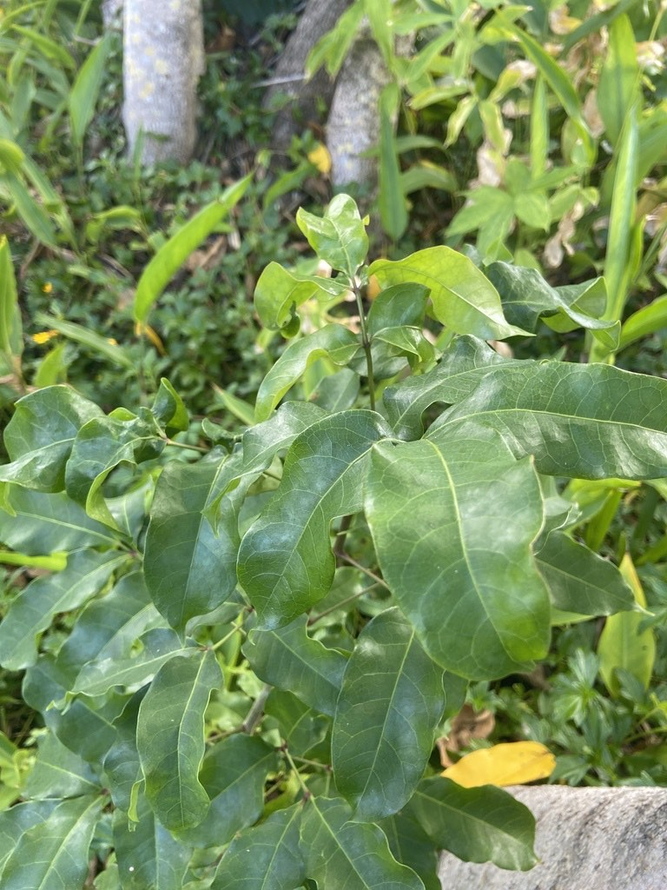

- One of the richest natural sources of vitamin C known — a single Acerola cherry contains approximately 65 times more vitamin C than an orange of similar weight. This is not approximate; it is documented nutritional analysis.
- The fruit is too fragile to ship commercially — it deteriorates within days of harvest. This is why it is rarely seen in mainstream supermarkets despite its nutritional value. It is grown commercially for its juice and supplement powder.
- Native to the Caribbean and Central America. In Puerto Rico called cereza — simply "cherry" — as if there were no other.
- A productive small tree that fruits heavily and nearly continuously in South Florida conditions.
Non-native. Native to the Caribbean, Central America, and northern South America. Grown throughout the tropics for its fruit. Member of Malpighiaceae — the barbados cherry family.
- Barbados Cherry is grown for its fruit, one of the richest known natural sources of vitamin C - far higher, gram for gram, than oranges. The small, bright red cherries are tart, soft, and quick to spoil, so they are eaten fresh, juiced, or processed soon after picking rather than shipped; the fruit is widely used in vitamin-C supplements and acerola powder.
- The plant itself is an easy, dense evergreen shrub or small tree with small pink five-petaled flowers, and it fruits several times a year, often a few days after rain. It is also called Acerola and West Indian Cherry, and it is native to the Caribbean, Central America, and northern South America.
- At the park it doubles as an edible-garden specimen and a wildlife plant - birds take the fruit, and the flowers draw bees.
The small red fruit is eaten by birds. The flowers attract bees and small pollinators. The dense foliage provides cover and nesting structure.
Small, pink, five-petaled, produced in small clusters. Attractive to bees.
Small, round to slightly lobed, bright red when ripe. Similar in appearance to a small cherry. Produced nearly year-round in Florida conditions.
Opposite, oval, glossy dark green. Evergreen.
Shrub to small tree, 6 to 15 feet. Dense, rounded canopy.
The small red cherry-like fruit on a dense evergreen shrub is the primary identification feature. The fruit is soft, juicy, and highly tart when ripe.
The fruit is highly edible and one of the richest natural sources of vitamin C — tart, eaten fresh or made into juice and supplement powder, though too fragile to ship fresh.
It's not toxic to people or dogs.

- © Pammy63 (CC-BY-NC), via iNaturalist
- © Joanne Walker (CC-BY-NC), via iNaturalist